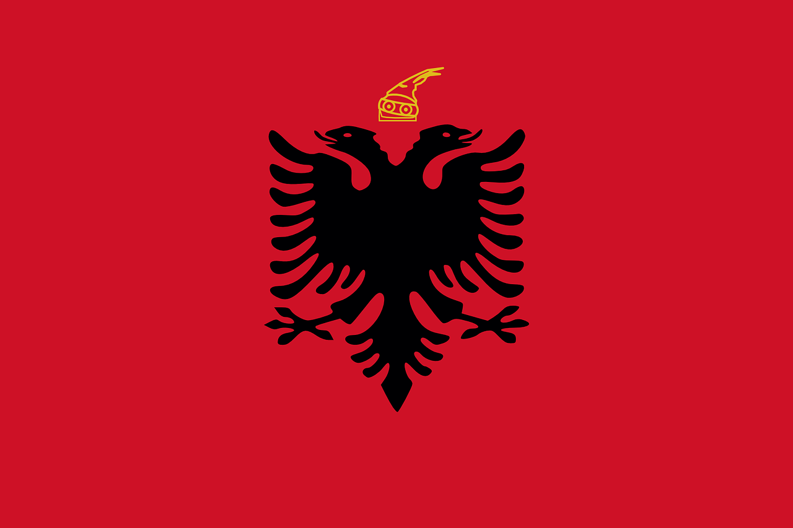

Албания
Алба́ния (алб. Shqipëria), полная официальная форма — Респу́блика Алба́ния[5] (алб. Republika e Shqipërisë [ɾɛpuˈblika ɛ ʃcipəˈɾiːs]) — государство в западной части Балканского полуострова. Население, по данным Института статистики Албании на 1 января 2017 года, составляет 2 876 591 человек, территория — 28 748 км². Занимает 136-е место в мире по численности населения и 139-е по территории. Столица — Тирана. Государственный язык — албанский.
Албания — унитарное государство, парламентская республика. Президентом Албании с 24 июля 2017 года стал Илир Мета, пост премьер-министра с 15 сентября 2013 года занимает Эди Рама. В административно-территориальном делении подразделяется на 12 областей.
Располагается на юго-востоке Европы на побережье Адриатического и Ионического морей. Пролив Отранто отделяет Албанию от Италии. На северо-востоке граничит с Сербией, частично признанной Республикой Косово[6], на северо-западе — с Черногорией, на востоке — с Северной Македонией, на юго-востоке — с Грецией. Албания, наряду с частично признанной Республикой Косово и Боснией и Герцеговиной, является одной из стран Европы с преобладающим мусульманским населением. Албания — член НАТО с 2009 года. Официальный кандидат на вступление в ЕС (с 2014 года)[7].

Этимология
Название страны, Shqipëria, по одной из версий, происходит от албанского слова «shqip» — «излагать мысль»[8]. Славист А. М. Селищев утверждал, что исток этого корня — слово «shqe», которое означает «славяне» (Shqerí — от албанского shqa<*skla, мн. ч. — shqe) и является следствием славянской колонизации Балкан в VI—VII веках[9].
Исполнительная власть
Албания является парламентской республикой. Формальным главой государства является президент (Kryetarët), избираемый парламентом сроком на 5 лет. Одно и то же лицо не может занимать президентский пост более двух сроков. С 24 июля 2017 года президентом является Илир Мета.
Исполнительный орган — Совет Министров (Këshilli i Ministrave), состоящий из Главного министра (Kryeministër) и министров, включает в себя следующие министерства: общественных работ, транспорта и телекоммуникаций образования и науки окружающей среды, администрации лесных и водных ресурсов сельского хозяйства, питания и защиты прав потребителей социально-трудовых дел и равных возможностей туризма, культуры, молодёжи и спорта финансов экономики, торговли и энергетики юстиции иностранных дел обороны инноваций и информационно-коммуникационных технологий здравоохранения европейской интеграции внутренних дел
Законодательная власть
Высшим законодательным органом Албании является Парламент — однопалатное Народное собрание (алб. Kuvendi i Shqipërisë), состоящее из 140 членов. 100 депутатов избираются по мажоритарной системе в одномандатных округах (в два тура), 40 — по партийным спискам с четырёхпроцентным барьером. Срок полномочий депутатов — 4 года.
Судебная власть
Орган конституционного надзора — Конституционный Суд (Gjykata Kushtetuese), высшая судебная инстанция — Верховный Суд (Gjykata e Lartë), орган прокурорского надзора — Генеральная Прокуратура (Prokuroria e Përgjithshme), орган для подбора кандидатур на должности судей — Высший совет юстиции (Këshilli i Lartë i Drejtësisë), орган для организации проведения выборов — Центральная избирательная комиссия (Komisioni Qendror i Zgjedhjeve).
Население
Численность населения — 2 831 741 (перепись 2011 года)[13], в то время как численность населения, по переписи 2001 года, составляла 3 069 275 человек: численность населения снизилась на 7,7 % в течение десяти лет. Основная причина снижения численности населения — крупномасштабная миграция и снижение рождаемости. Постоянное население: 1 421 810 мужчин — 50,2 %, 1 409 931 женщин — 49,8 %[13]. Годовой прирост — 0,3 % (высокий уровень эмиграции из страны)[14]. Городское население — 53,7 % (данные на 2011 год[13]), сельское население — 46,3 %. Впервые в истории переписи (2011) населения в стране, албанцев проживает в городах больше, чем в сельской местности. Этнический состав: албанцы — 95 %, греки — 3 %, другие (румыны, цыгане, сербы, македонцы) — 2 %. В апреле 1990 года прекратила своё существование еврейская диаспора в стране: последние 11 евреев отбыли в Израиль[15].
Религия
Основная статья: Религия в АлбанииВ начале XX века соотношение между христианами и мусульманами в Албании было почти равным — 47 % католиков и православных, 53 % мусульман[16]. В 2010 году, по данным «Энциклопедии религий» Дж. Г. Мелтона, мусульмане составляли 63 % населения Албании, христиане — 31 %, неверующие и атеисты — 5 %[17]. Ислам представлен суннитами и бекташами. Христиане распределяются на две примерно равные группы — католики (490 тыс.) и православные (475 тыс.). Большинство протестантов (20 тыс.) являются прихожанами различных пятидесятнических церквей. Согласно Госдепу США доля лиц, принимающих активное участие в религиозной жизни и службах в храмах, составляет от 25 до 40 %[18].
Карта Албании
Основные статьи: География Албании, Полезные ископаемые Албании Рельеф Общая площадь Албании составляет 28 748 км². Побережье длиной 362 км омывается Адриатическим и Ионическим морями. В западной части располагается низменная область, остальное (около 70 %) — горные и лесистые районы. Высочайшая точка — гора Кораб (2753 м) в префектуре Дибра. Самая крупная река Албании, Дрин, протекает по северным областям страны. Среди других рек: Мати, Вьоса, Шкумбини и Семани. Три крупнейших и глубочайших озера Балканского полуострова частично располагаются в Албании. Озеро Шкодер (Скадарское), третья часть которого и 57 км побережья принадлежит Албании, находится на севере страны, на границе с Черногорией. Разделённое между Албанией и Северной Македонией Охридское озеро имеет глубину 289 м и уникальные флору и фауну, из-за чего находится под охраной ЮНЕСКО. Озеро Преспа располагается немного южнее и поделено между Албанией, Македонией и Грецией. Растительный и животный мир Представителей растительного мира насчитывается более 3 тыс. На побережье распространён маквис, около трети территории Албании (в основном, горные районы) покрыто лесом, в которых обитают бурые медведи, волки, шакалы, рыси и лесные кошки, а также дикие кабаны, косули и олени. В прибрежных районах много водоплавающих птиц. Полезные ископаемые На территории Албании есть месторождения нефти, природного газа, угля, хрома, меди, никеля.
Климат
Средние температуры января — +8—9 °C, июля — +24—25 °C. Осадков — 800—2000 мм в год. Климат прибрежной (западной) части страны — средиземноморский, переходящий к востоку в континентальный. Средняя температура июля на побережье — от +28 до +32° С, января — от +8 до +10° С. Высокие летние температуры на побережье переносятся легко из-за постоянно дующего средиземноморского бриза. Туристический сезон продолжается с мая по сентябрь, но на воздухе комфортно находиться также в апреле и октябре. В году около 300 солнечных дней. Ранней весной и поздней осенью идут дожди. В горах Албании климат значительно более холодный — зимой температура может опускаться до −20° С.